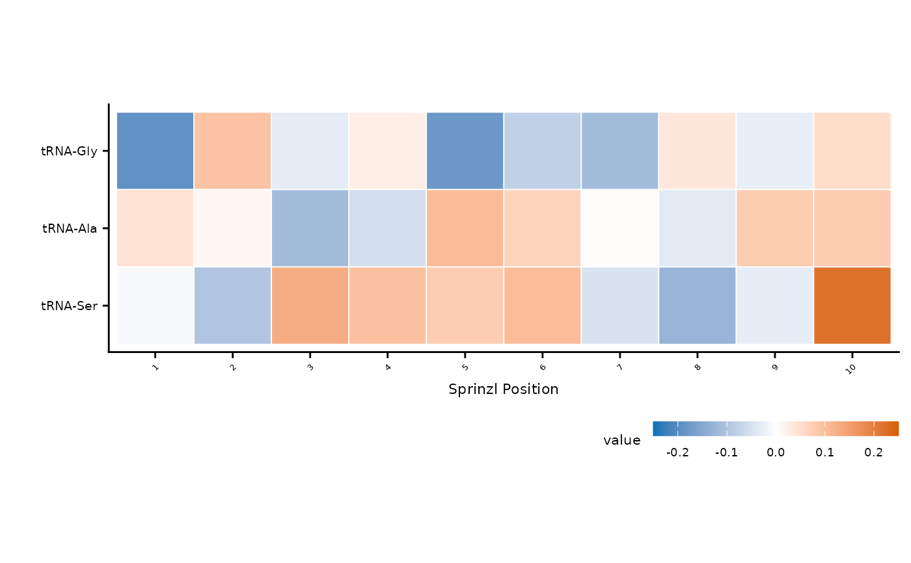

Create a diverging heatmap of modification signal changes (e.g., mutant minus wild-type) across tRNA families and Sprinzl positions. Rows can be optionally clustered using Ward's D2 hierarchical clustering.
Usage
plot_mod_heatmap(
data,
value_col = "value",
ref_col = "ref",
cluster = TRUE,
color_limits = c(-0.25, 0.25),
color_low = "#0072B2",
color_high = "#D55E00",
na_value = "gray80",
square = TRUE,
label_col = NULL,
label_min = 0.05,
label_size = 2.5,
highlight_col = NULL,
highlight_size = 0.4,
highlight_offset = c(-0.35, 0.35),
cluster_threshold = NULL,
group_col = NULL,
divider_linewidth = 0.8,
fill_name = waiver(),
fill_breaks = waiver(),
caption = NULL
)Arguments
- data
A data frame with at least three columns: one for tRNA family/reference (y-axis), one for Sprinzl position labels (x-axis), and one for the fill value.
- value_col
Column name (string) for fill values. Default
"value".- ref_col
Column name (string) for tRNA families (y-axis). Default
"ref".- cluster
Logical; cluster rows with Ward's D2? Default
TRUE.- color_limits
Numeric vector of length 2 giving symmetric limits for the color scale. Default
c(-0.25, 0.25).- color_low
Color for negative values. Default
"#0072B2"(blue).- color_high
Color for positive values. Default
"#D55E00"(red).- na_value
Color for missing positions. Default
"gray80".- square
Logical; use
coord_fixed(ratio = 1)? DefaultTRUE.- label_col
Column name (string) with text labels to overlay on tiles (e.g., nucleotide letters). Default
NULL(no labels).- label_min
Minimum
abs(value)to show a label. Default0.05.- label_size
Font size for tile labels. Default
2.5.- highlight_col
Column name (string) of a logical column;
TRUEcells get a dot overlay. DefaultNULL(no dots).- highlight_size
Dot size for highlighted cells. Default
0.8.- highlight_offset
Numeric vector of length 2 giving x/y offsets from tile center for highlight dots. Default
c(-0.35, 0.35).- cluster_threshold
Numeric threshold for noise filtering during clustering. When non-NULL, only positions where any row has
abs(value) > cluster_thresholdare used to build the distance matrix. Falls back to all positions if nothing passes. DefaultNULL.- group_col
Column name (string) for group-aware clustering. When provided, rows are clustered within each group and horizontal divider lines separate groups. Default
NULL.- divider_linewidth
Line width for group dividers. Default
0.8.- fill_name
Legend title for the fill scale. Default
waiver()(ggplot2 default).- fill_breaks
Numeric vector of legend breaks for the fill scale. Default
waiver()(ggplot2 default).- caption
Explanatory text displayed below the plot. Default
NULL.
Examples
df <- tidyr::expand_grid(
ref = paste0("tRNA-", c("Ala", "Gly", "Ser")),
sprinzl_label = as.character(1:10)
)
df$value <- rnorm(nrow(df), sd = 0.1)
plot_mod_heatmap(df)
